Barragán house, Tacubaya, Mexico 1947
Luis Barragán
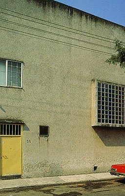
Houses of the Century
Anatxu Zabalbeascoa |
Luis Barragán has shaped a very unique
style, using abstract architecture from the modern language combined
with solutions and materials out of the Mexican tradition.
The house consists of simple geometrical forms and warm colours.
He plays with light, shadows, colours and openings, which cause
remarkeble spaces and compositions. On the left photograph you
see the main facade of the house. On the right you see a piece
of the living room. The window which provides for daylight seems
to have no kozijnen.
|
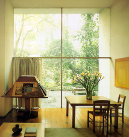 |
House in Riva San Vitale, Ticino Switzerland, 1973
Mario Botta
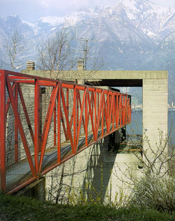
Houses of the Century
Anatxu Zabalbeascoa |
Mario Botta is influenced by the Modern Movement
(in the way of the treatment of details and materials) and by
Frank Lloyd Wright (integration of architecture and landscape).
He uses very simple geometrical forms. This building is plasec
on (or more "in") a mountainside. This building can
be entered by a red metal bridge which penetrates the heart of
the building. On the picture on the right you see a large window
occupying one wall of the tripleheight living room. Radiators
are placed beside the window over the total height of the room
to ensure a good climate. |
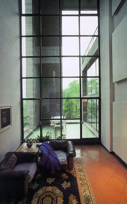 |
|
The splendid Knipschild Residence, Sonoma, Unites States
Batey and Mack
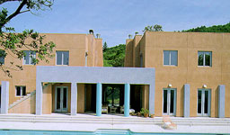
Country Houses
Telleri
|
The building is based on a combination of rectangles,
squares, crosses, symmetry and contrasts. The south facade of
the house opens to the sun and the valley while the north facade
is closed and compact. The house contains of two cubic forms
connected by a portico (supported by blue columns as you can
see on the left photograph). You can walk through a corridor
to the other part of the house. This can be seen on the right
picture. Most of the light is coming through a door at the end
of the corridor so the light guides you the way. The interior
of the house is sober just like the outside, bur the soft tones
cause warmth and enchant the daylight. |
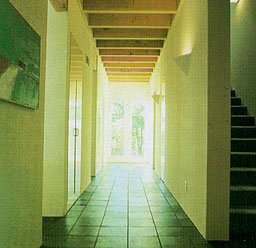 |
A House near Gerona, Spain
BDM
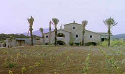
Country Houses
Telleri |
The original building is not situated on a
very interesting location. To improve the view a number of attractive
elements were added like a large patio at the entrance, terraces
and a large wall pierced with two arches as you can see on the
left picture. Nevertheless the original building has not been
significantly changed. Only some walls have been replaced by
window to provide for daylight. This can be seen on the right
picture. A glass wall with metalwork makes daylight streaming
into the living room and gives a nice view to the garden. Because
of the daylight brushing past the ceiling the structure of it
is easy to be seen. |
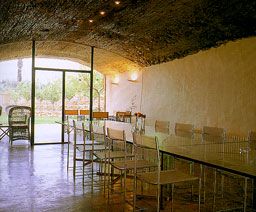 |
Douroux House, Venice, United States
Antoine Predock
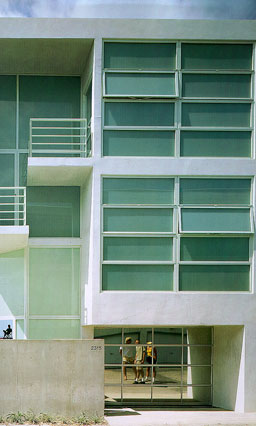
Houses by the sea
Telleri |
The Douroux House is built on Venice Beach.
Its form looks like a narrow rectangular block built of concrete,
glass and steel. One facade to the Pacific is very open and the
other one facing the city is more closed. As you can see on the
left picture the more closed facade has windows which provide
for daylight and can be opened for fresh air, but you can't look
into the house. This to give the occupants a greater privacy.
On the ground floor the double-height living room is situated.
It has a cubic form with large openings to the beach as you can
see on the pictures. Especially the red extremely large window
gets the attention. The floor of the living room contains out
of two materials. The difference between these materials in combination
with incoming daylight can be seen on the right pictures.
|
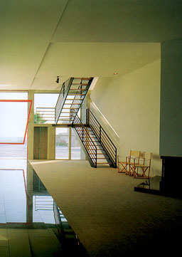
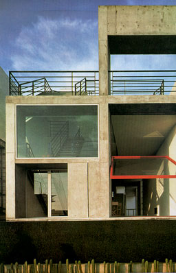 |
A House in Jutland, Denmark
Torsten Thorup & Claus Bonderup
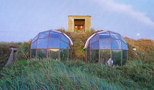
Houses by the sea
Telleri |
This house is built in a dune facing the North
Sea. The only visible parts are the entry and two glass domes
providing for daylight and a nice view to the sea. According
to this principle light is coming from only one side into the
deep rooms which causes a very dark interior as you can see on
the right picture. |
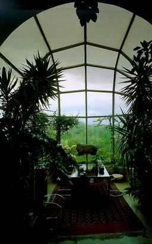 |